Je suis SOME Mwinyel Cheick Landry, étudiant en ingénierie informatique spécialisé en Programmation,développement web et reseaux.
Fort d'expériences en Programmation, en configuration d'équipements réseaux , administration système Linux et en Developpement web je combine rigueur et passion pour concevoir des architectures stables, performantes et optimisées.
Actuellement en deuxième année à l'École Supérieure d'Informatique (ESI) de l'Université Nazi Boni, j'allie compétences pratiques en programmation et engagement communautaire pour relever des défis techniques complexes.
Solution autonome permettant d'apposer automatiquement un cachet personnalisé sur n'importe quel document PDF.
Plateforme (www.kolektus.com)
ESI – Université Nazi Boni
ESI – Université Nazi Boni
ESI – Université Nazi Boni
Formation d'ingénieur en informatique. Implication active dans la vie associative : Secrétaire Général et formateur pour Code Camp 2026, chargé de communication et formateur Python au Club Génie Logiciel UNB.
Poursuite du cursus secondaire.
Cycle secondaire, filière scientifique.
Début du cycle secondaire.
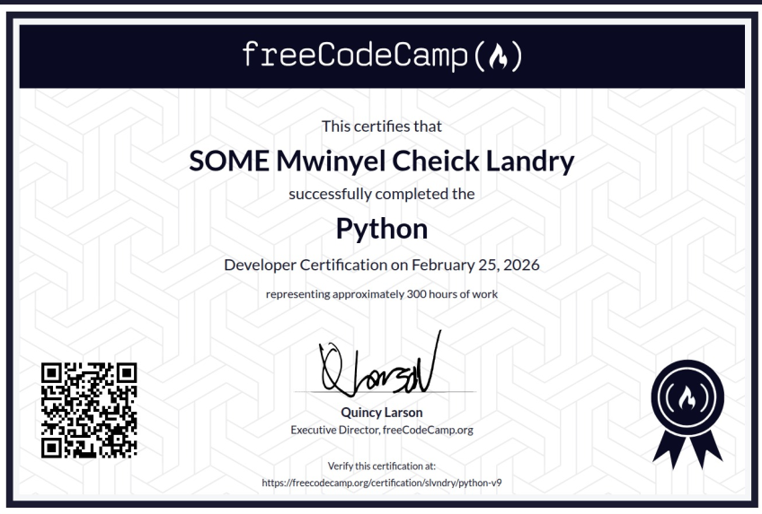
Certification Python représentant environ 300 heures de travail : structures de données, POO et scripts pratiques.
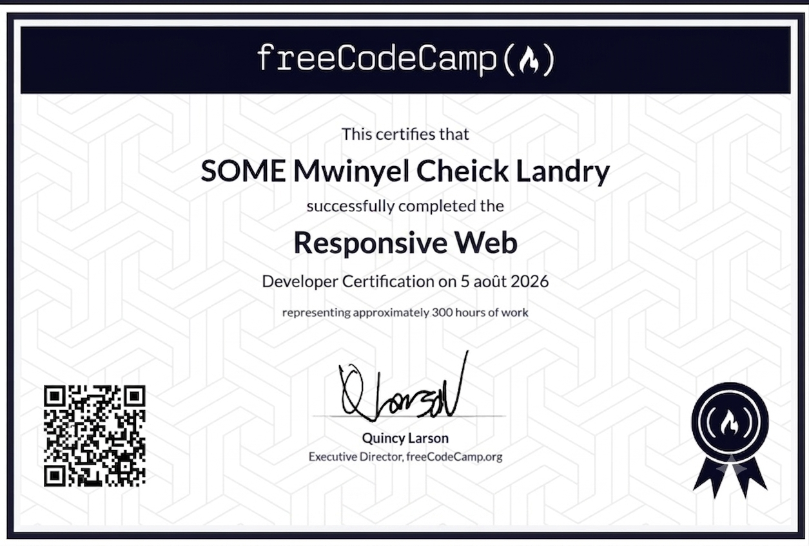
Certification sur le développement web représentant environ 300 heures de travail : HTML, CSS...
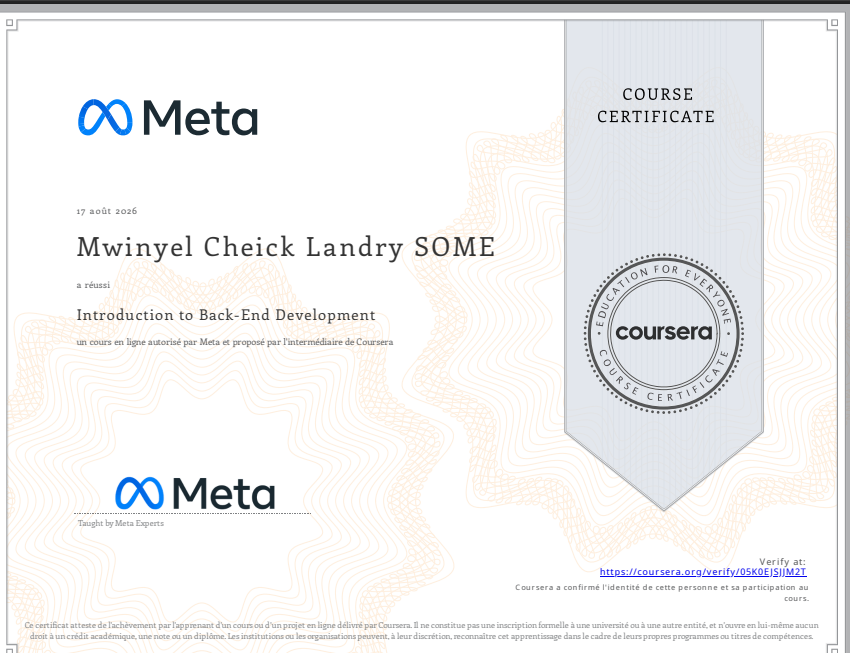
Bases fondamentales de l'architecture serveur, des API et du développement Web Back-End.
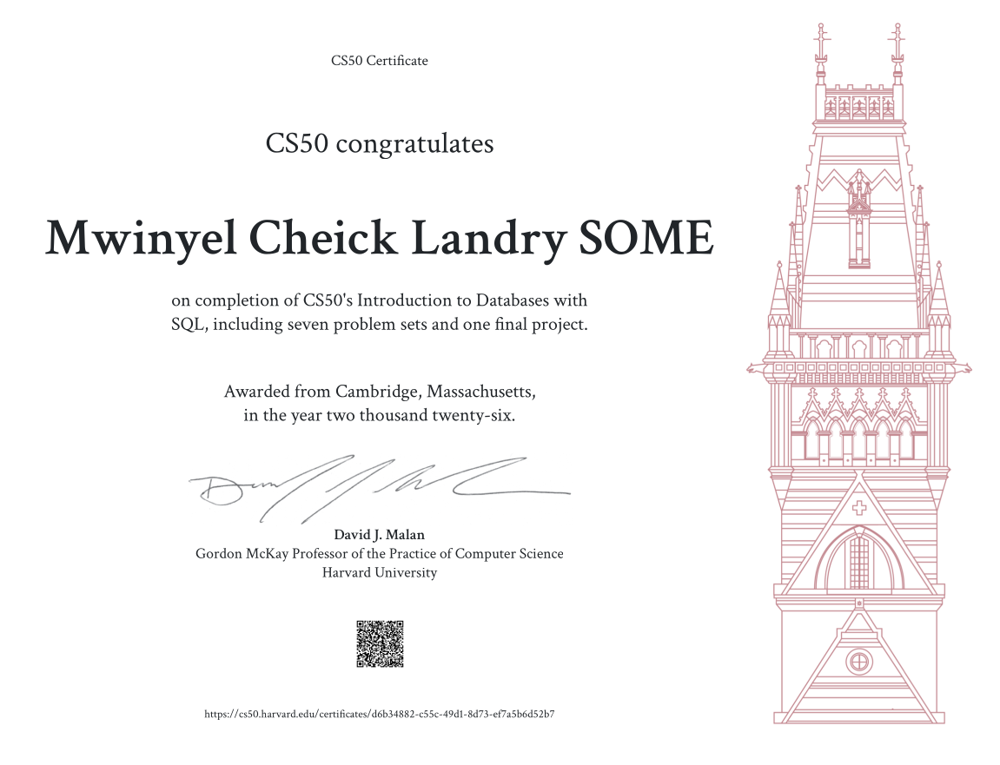
Sept problem sets et un projet final couvrant la modélisation de bases de données et le langage SQL.
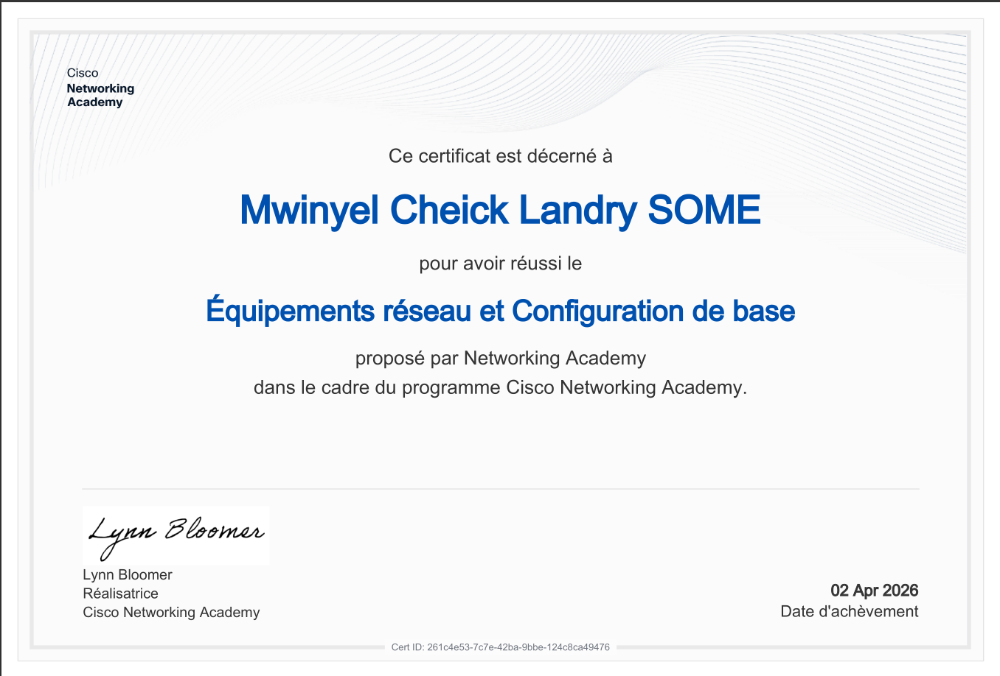
Configuration de base des équipements réseau : routeurs, switchs et paramétrage initial d'une infrastructure.
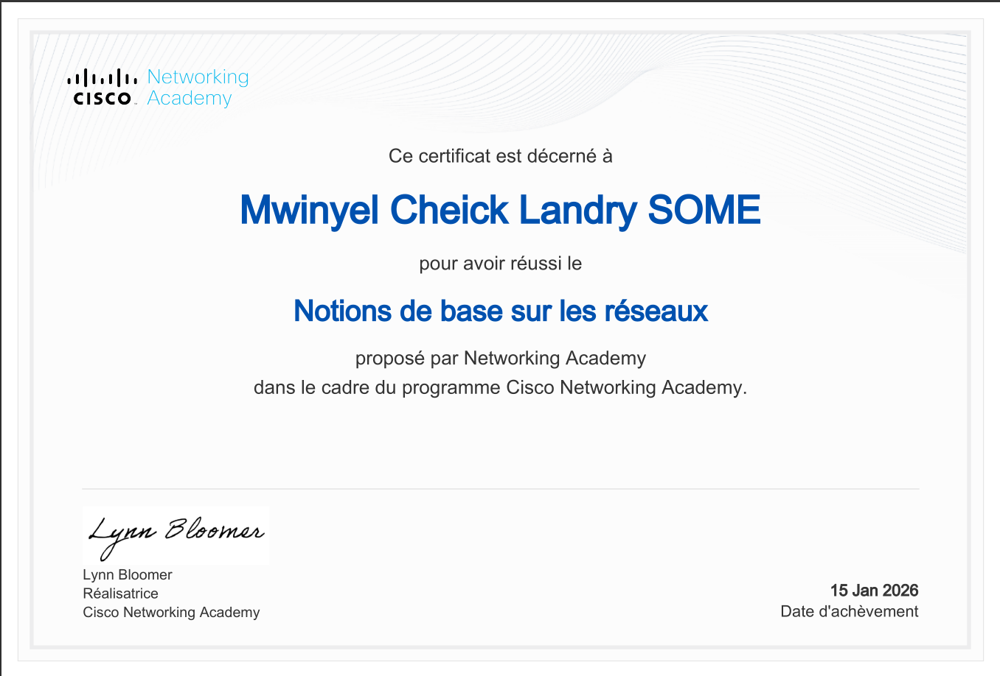
Fondamentaux des réseaux informatiques : modèles OSI/TCP-IP, adressage IP et principes de communication.
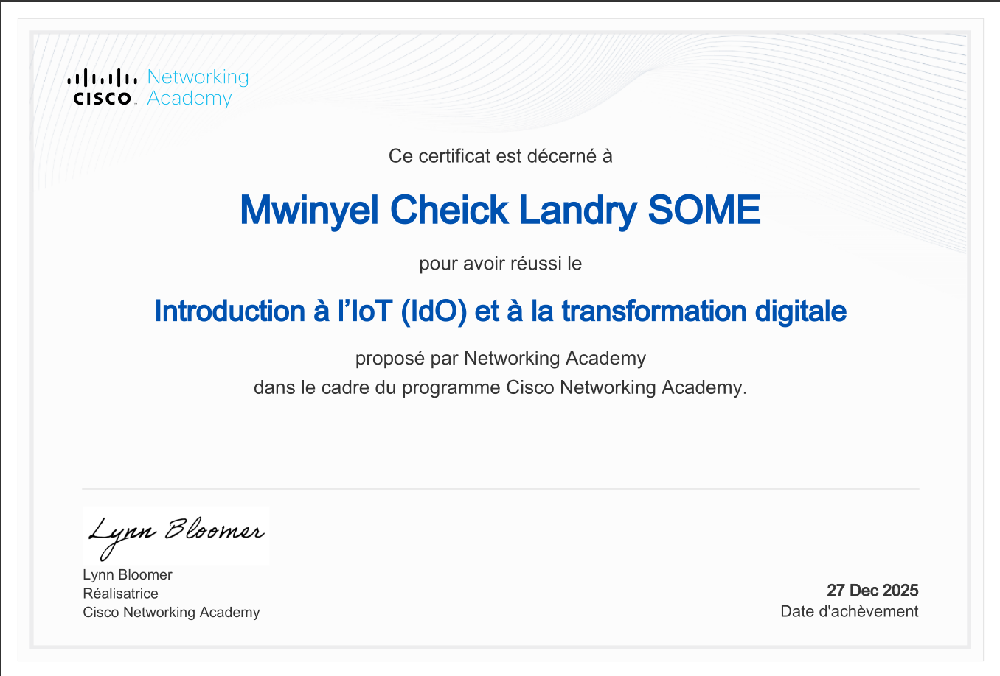
Concepts fondamentaux de l'Internet des Objets et impact de la transformation digitale sur les industries.
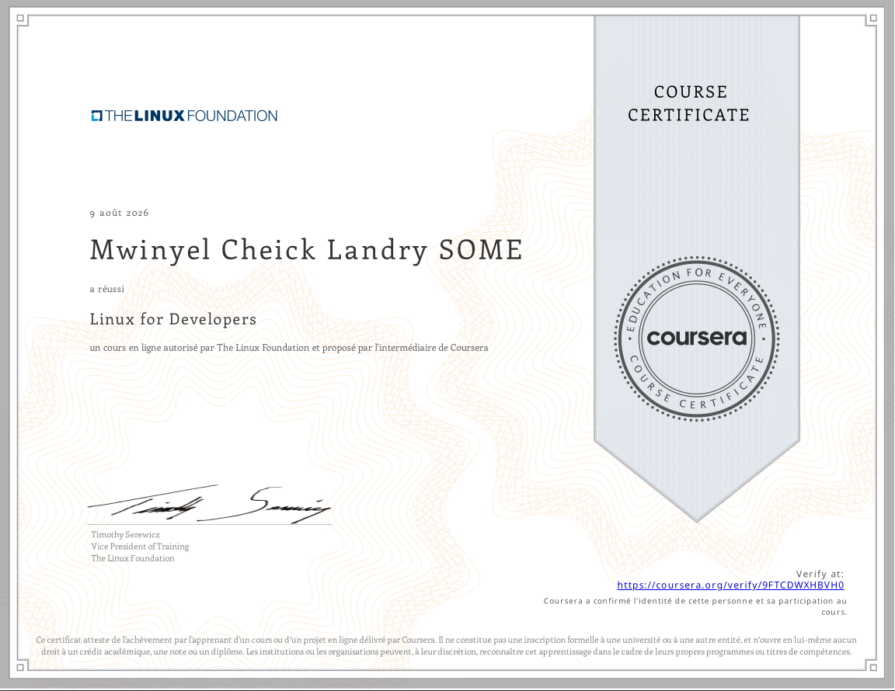
Formation sur l'administration et l'utilisation des systèmes d'exploitation Linux.
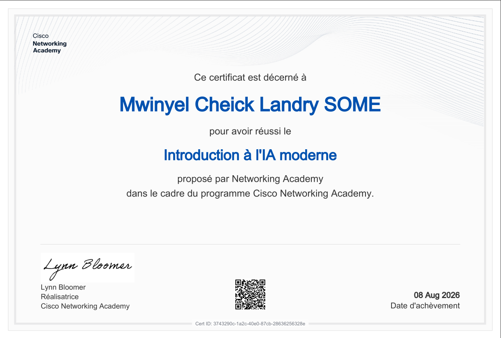
Formation sur les principes et applications de l'IA moderne.
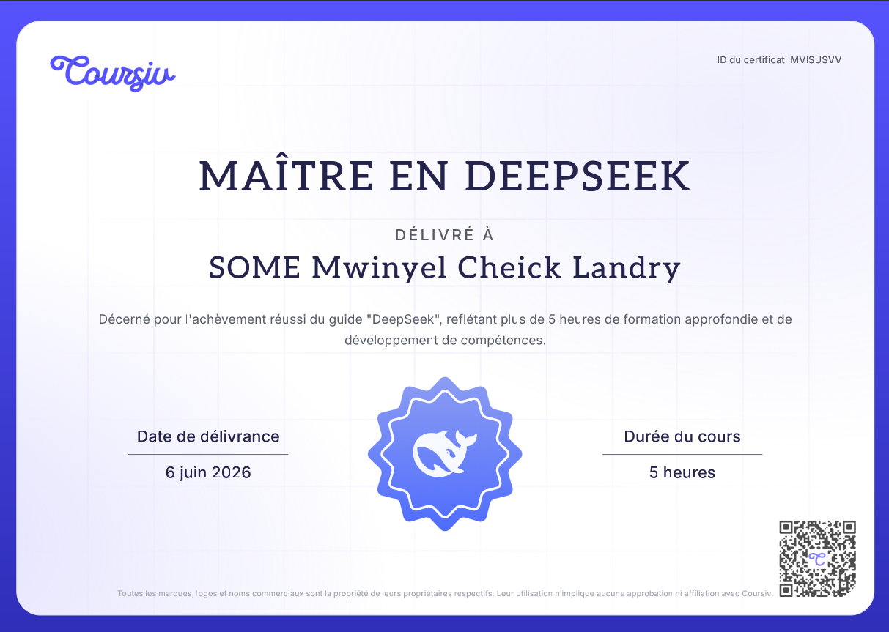
Formation approfondie de 5 heures sur l'utilisation avancée de l'IA DeepSeek pour la productivité.
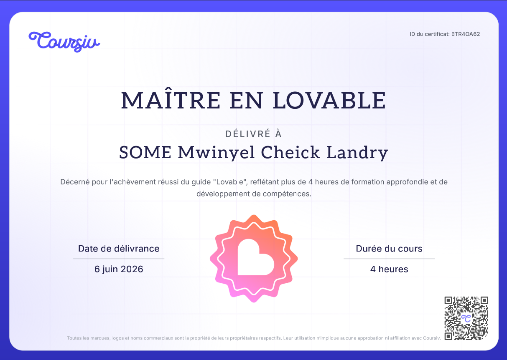
Formation de 4 heures sur l'outil Lovable pour la création rapide d'applications par IA générative.
Connaissances sur le numérique, Soft Skills et Anglais professionnel.
Vous avez un projet , une application à développer, ou vous souhaitez simplement échanger ? Je suis disponible et ouvert à toute opportunité de collaboration.
Accès restreint aux fonctionnalités de la page.